Night and low battery


Checkpoint 3 design review · E3 layout. The hourly forecast shows the next four future marks from 12 AM, 3 AM, 6 AM, 9 AM, 12 PM, 3 PM, 6 PM, and 9 PM local time. The first mark is strictly later than the current time. Each frame is 400 × 300 px and black and white only. The 85 mm view uses CSS millimeters; compare its ruler with a real ruler because screens may scale physical units differently.
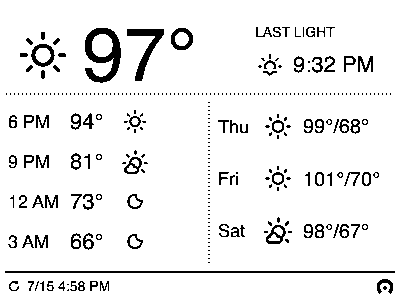
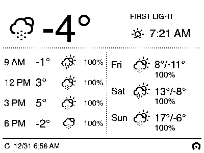
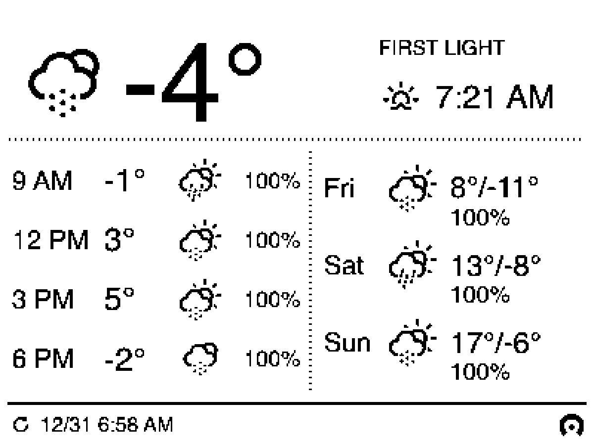
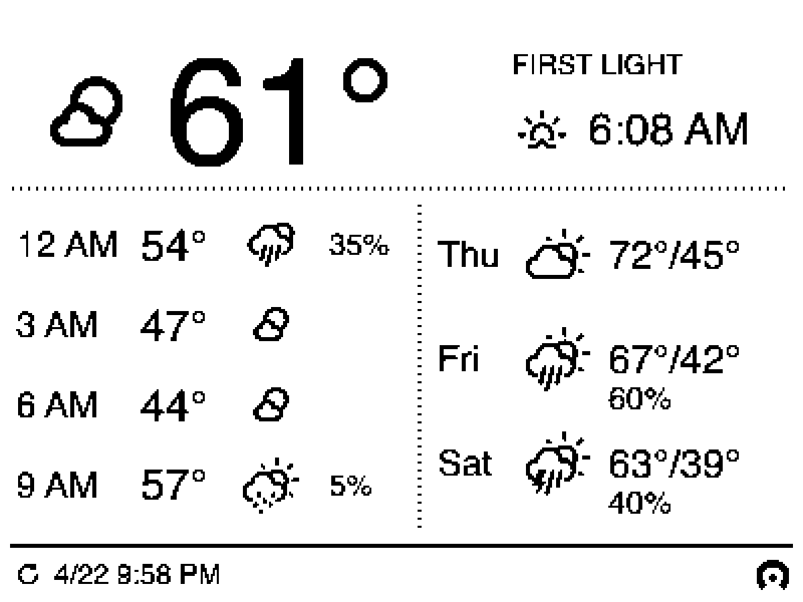
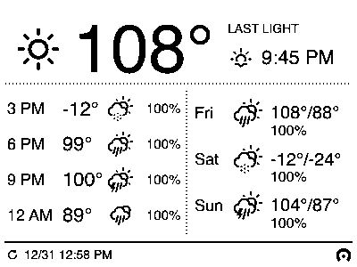
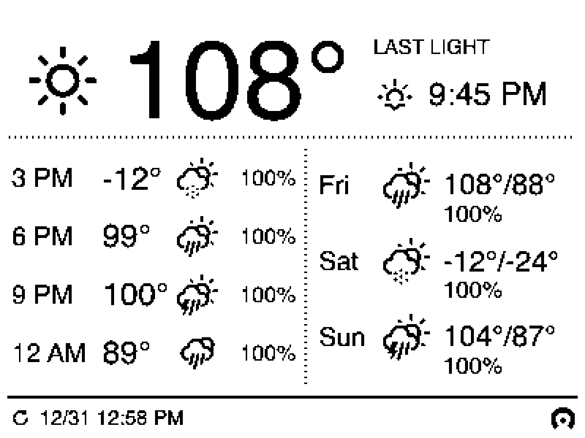
These apply the approved four-mark layout. The low-battery state adds only a footer glyph. A failed fetch keeps the last good frame on the panel, so its footer timestamp is the only staleness indicator. The severe-weather alert state and the DATA STALE badge were removed from scope on 2026-09-25; their renders are kept under exports/archive/.
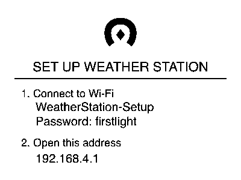
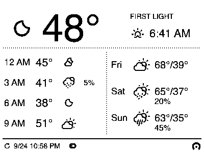
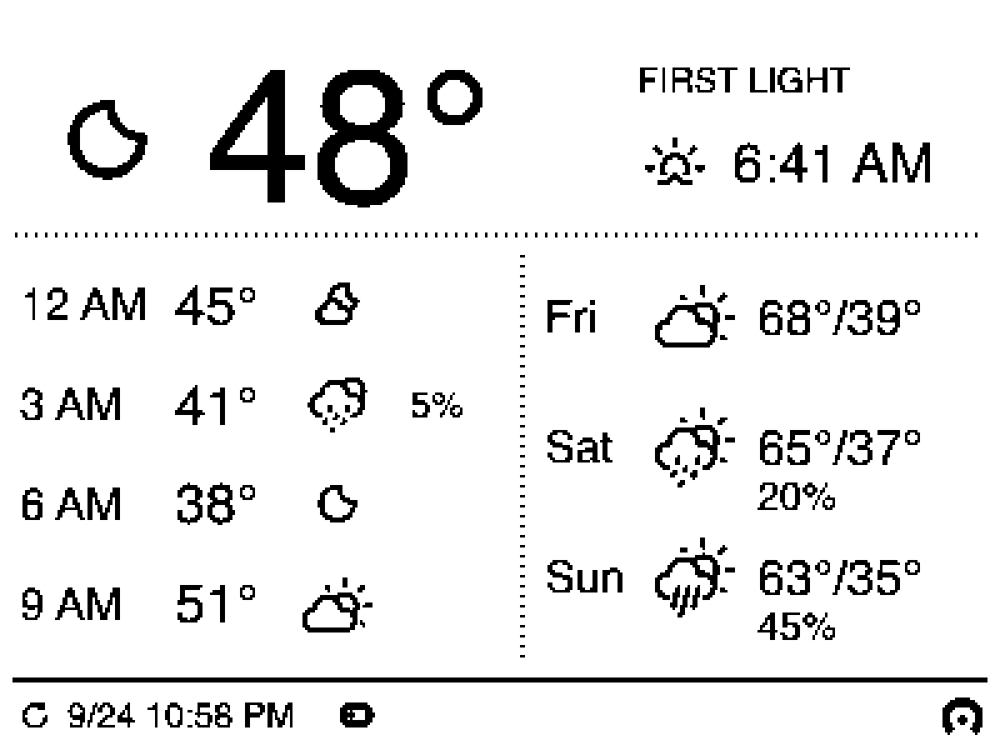
These are retained for reference; E3 was selected for refinement.
Whitespace alone separates the current area, hourly list, and daily list. The solid footer rule remains.
One dotted line separates current conditions from the two forecast lists. Whitespace separates the lists and their periods.
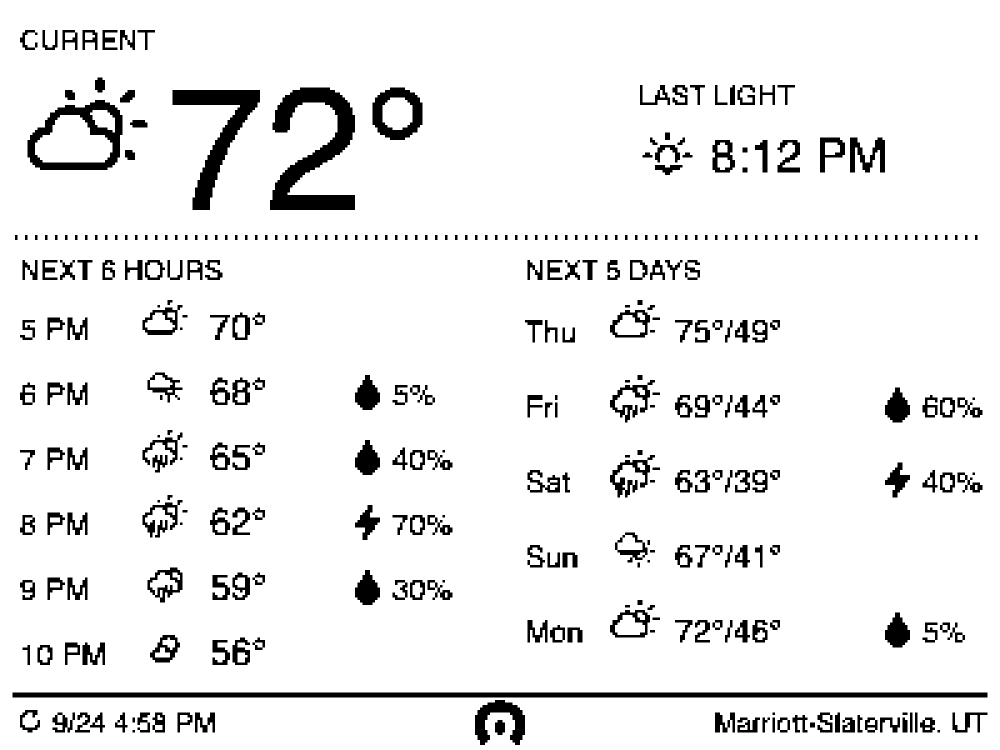
Removes the period separators while retaining the dotted top and center rules from E.
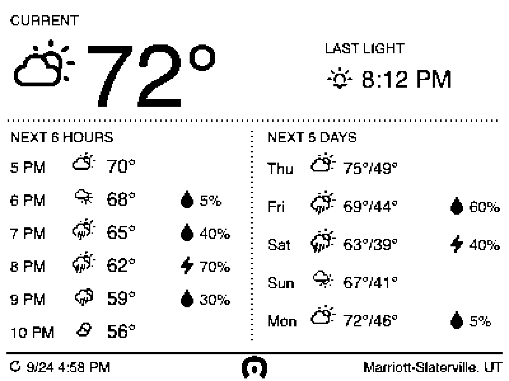
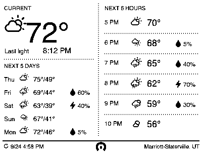
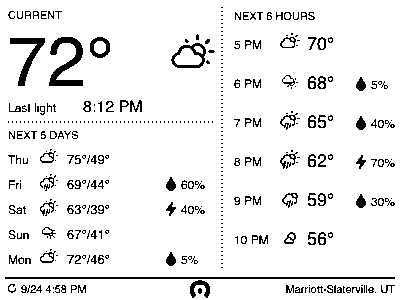
Most open and closest to the quiet reference: a large current reading, then separate six-hour and five-day bands. The daily band is the tightest area.
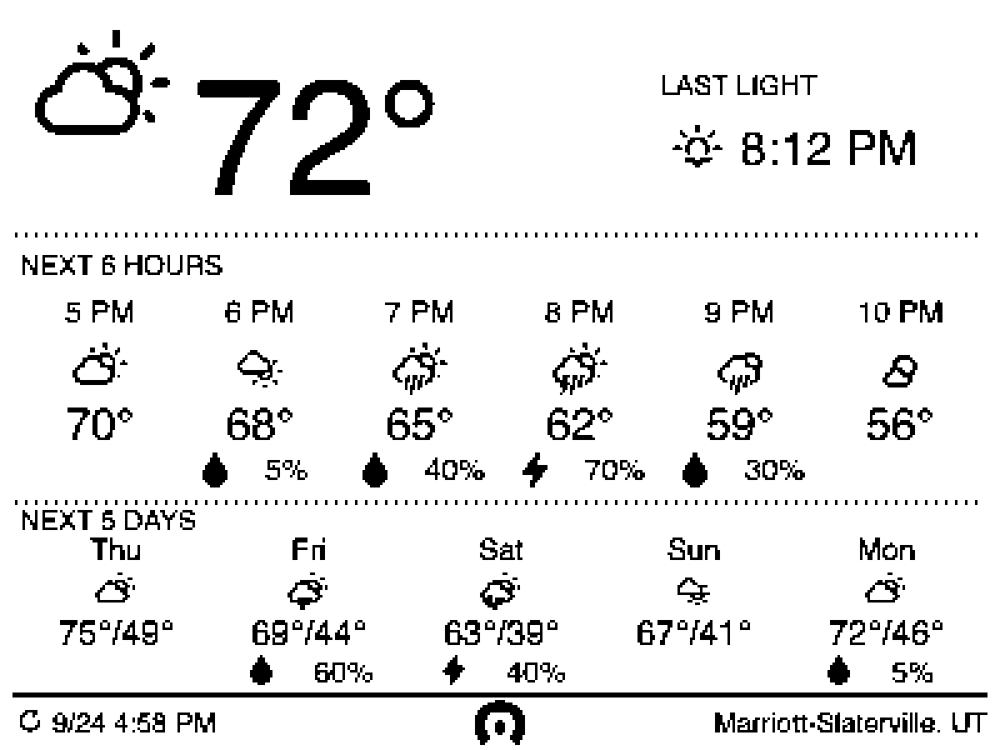
Current conditions get the left half of the top field while six hours form a compact two-row grid on the right. The five days have a full-width lower band.
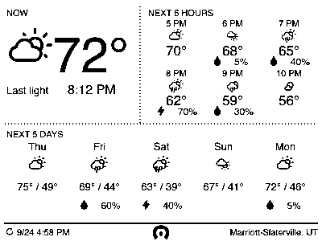
Current conditions and five days stack on the left; six hours read as a vertical list on the right. The forecast is easiest to scan sequentially, but the type is more compressed.
Keeps C's left current/day column and right hourly list. The current temperature grows and the hourly rules disappear, giving the right column more breathing room.
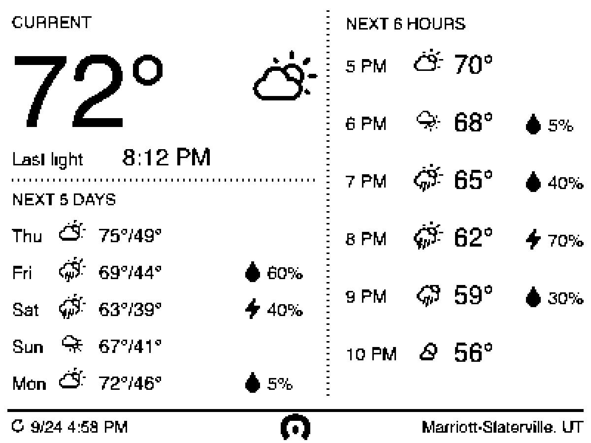
Moves the current reading across the full top width. Below it, hourly and daily forecasts keep C's vertical-list rhythm in balanced columns.
Candidate type and icon sizes after 1-bit threshold. Forecast icons at 20 px lose small marks; 24 px reads better, while the four simplified precipitation glyphs stay distinct at 14 px.
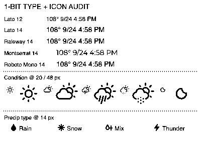